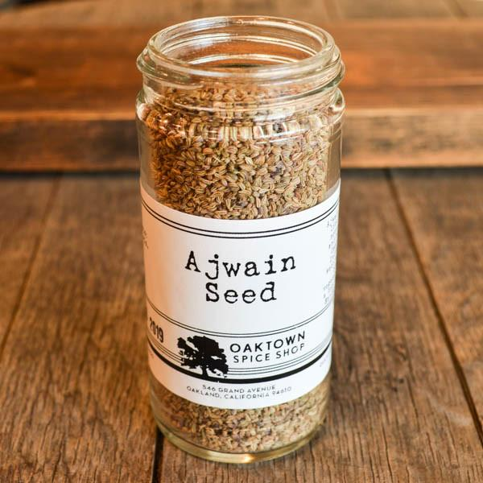

Indian cuisine can be traced back to the ancients days to two ancient Indian civilizations; (Harappa and the Mohenjo Daro). Their food preparation included cereals and pulses, during the Vedic period is when better forms of cooking was discovered. A regular diet during this time included vegetables, fruits, grains, mean, honey, dairy, beverages and special kinds of spices. The Aryans introduced a variety of cuisines that went well with the Vedic food culture. During the rule of Maurya and Gupta Empires, the consumption of mean was strictly condemned due to some sacred beliefs. Most civilians remains vegetarian because of the influence of religion. During the Medieval period, the Mughal cuisine was introduced by the Muslims that came from Central Asia; they brought new kinds of fruits and flatbreads. Sumptuous dishes were created during the rule of Shah Jahan and Jahangir, followed by the Nizams and the Portuguese developing their styles of cooking. Then the Chinese, British and Anglo-Indian had their influence on Indian food. Today, Indian food still carries the traditional trends of Indian cuisines. Sweet have become the major attraction for both Indian festivals but also during special occasions.
| Ingredient | Use | Picture |
|---|---|---|
| Chapati Flour | -Used in the making of chapati, roti and naan flatbreads- | |
| Coconut Milk | -Used in stews and curries- | |
| Basmati Rice | -Used in biriyani and pilaf dishes- | |
| Ajwain | -Used in vegetable and fish dishes- |  |